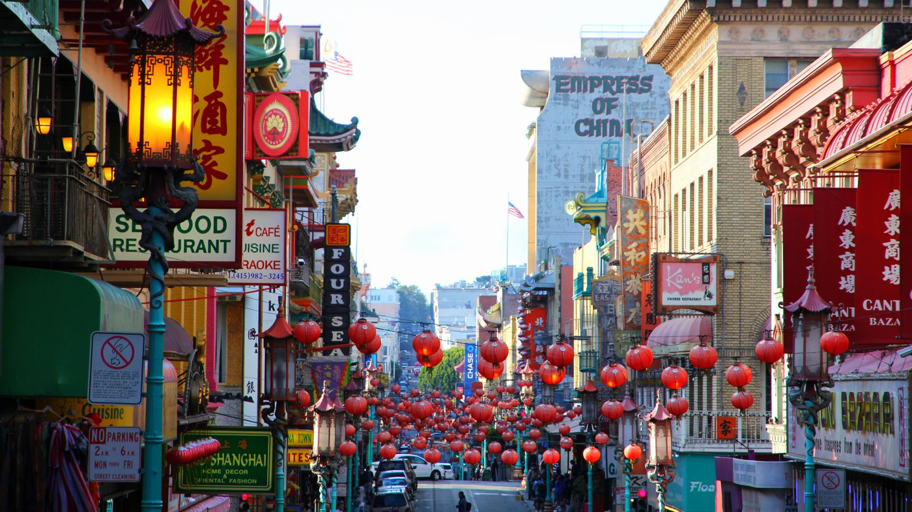

|  |
Fisherman's Wok is a small Chinese restaurant located in the historic Chinatown neighborhood
of San Francisco. It was founded over 50 years ago by a Chinese immigrant named Mr. Wong, who
arrived in the city with a dream of owning his own restaurant.
Mr. Wong's goal was to create a restaurant that was different from all the other Chinese restaurants
in the area. He wanted to showcase the diverse flavors of Chinese cuisine, with a focus on fresh ingredients
and authentic cooking techniques.
Despite the name, there is no seafood on the menu at Fisherman's Wok, which has become a source of irony for many
customers. Mr. Wong originally intended to specialize in seafood dishes, but he quickly realized that his passion
lay in other areas of Chinese cuisine. He decided to keep the name as a nod to his original vision, and it has since
become a quirky aspect of the restaurant's identity.
Fisherman's Wok is located at 888 Grant Avenue in San Francisco's historic Chinatown neighborhood. If you're ever in the
area and looking for a taste of authentic Chinese cuisine, head to Fisherman's Wok and discover the delicious flavors that
have made it a neighborhood favorite for over 50 years.
|